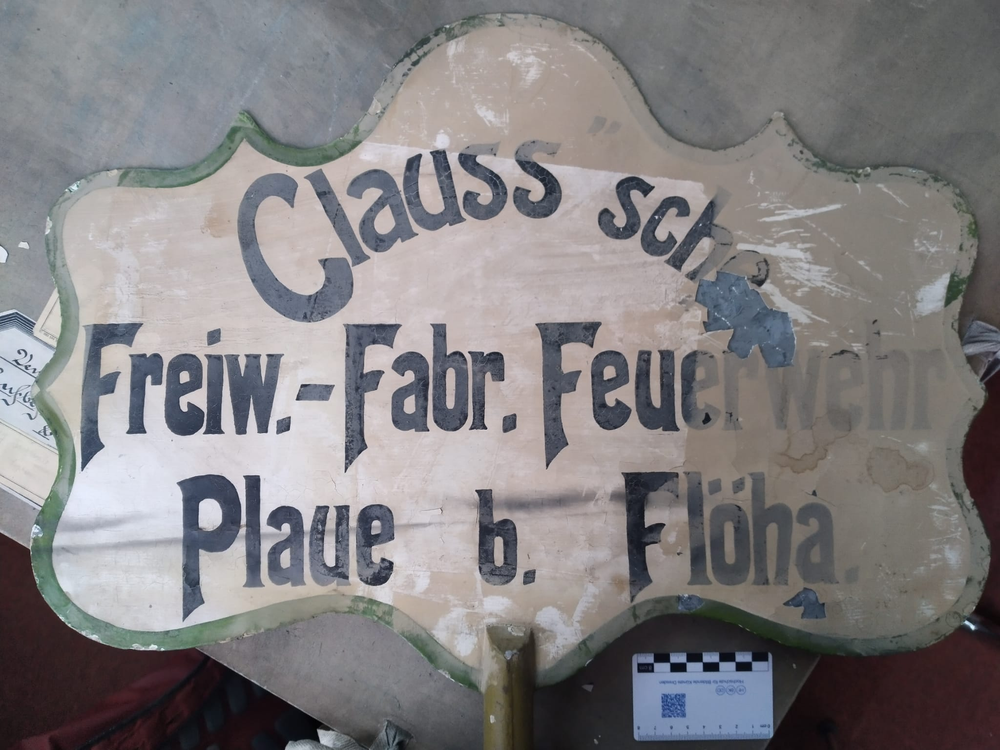
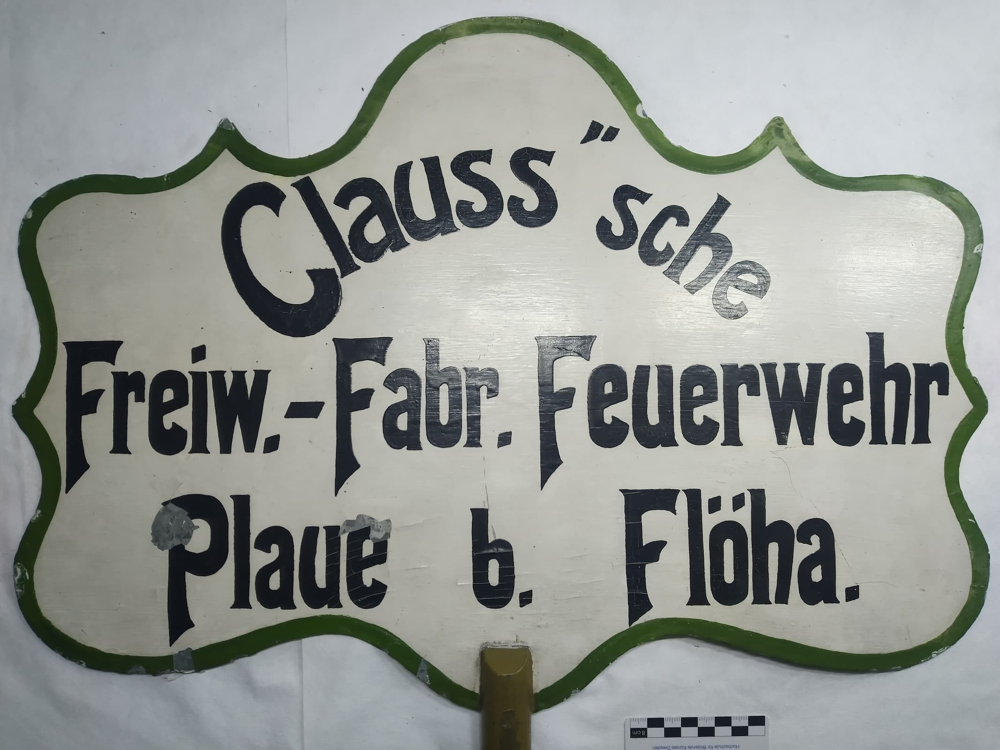
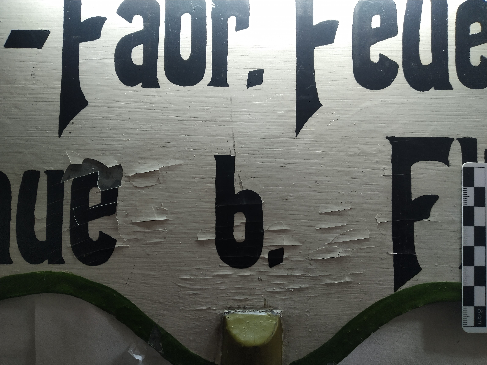
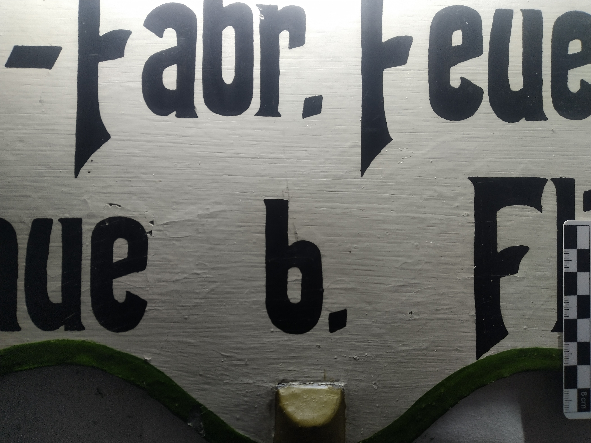
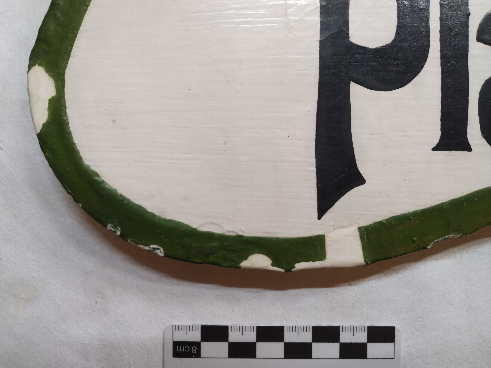
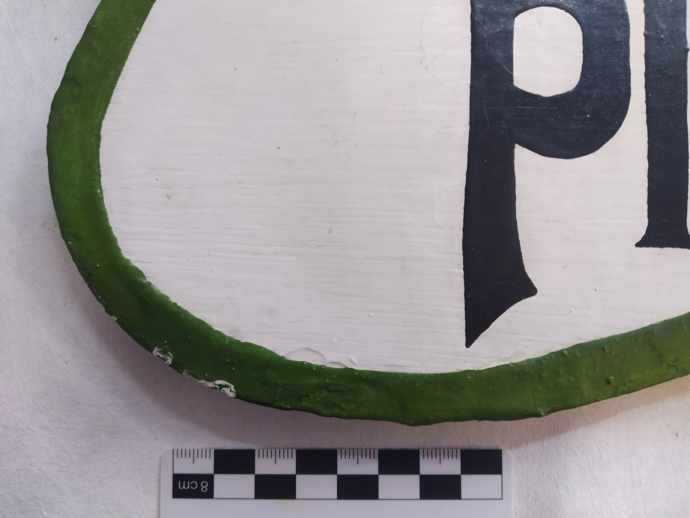

Feuerwehrschild Alte Baumwollfabrik Flöha
| Objektspezifizierung | Feuerwehrschild Alte Baumwollfabrik Flöha Eigentümer: Bauverwaltung Stadt Flöha (Clausstraße 7, 09557 Flöha) |
| Material und Technik | Handbemaltes, vermutlich feuerverzinktes Blechschild |
| Datierung | Frühes 20. Jahrhundert |
| Künstler/Werkstatt | Unbekannt |
| Provenienz | Vermutlich Raum Flöha |
| Max. Maße | 41 × 57 × 6 cm |
| Maßnahmenschwerpunkt |
- Reinigung der Oberfläche - Aufbringen einer temporären Sicherung der Fassung - Niederlegen und Festigen der Fassung vorderseitig - Kittung und Retusche ausgewählter Fehlstellen |







